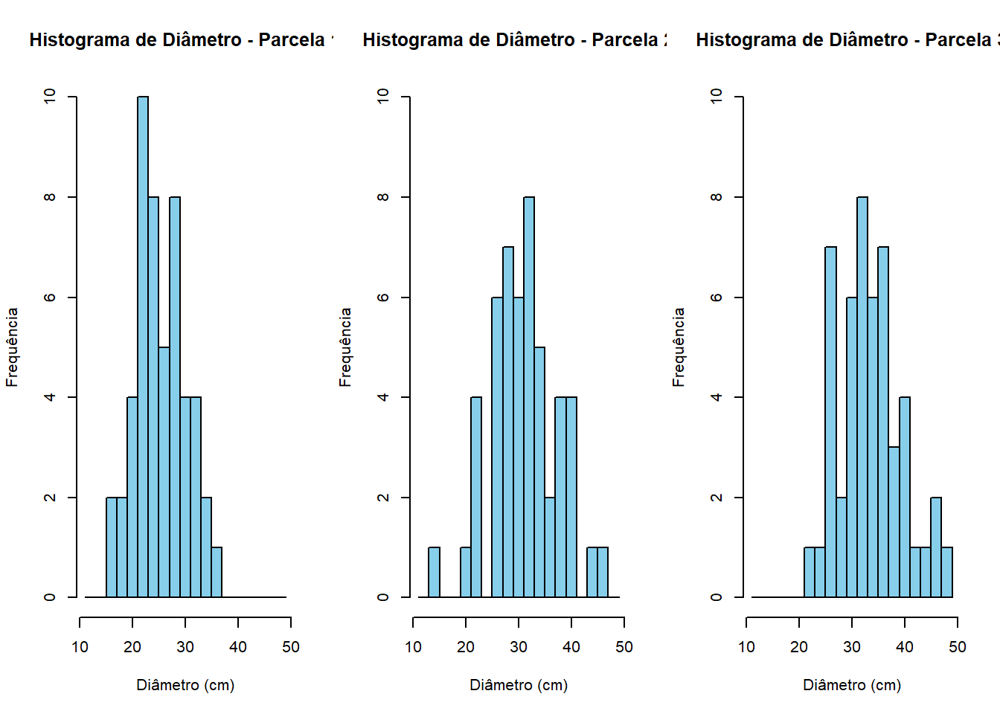

1 Dendrometria
1.1 Diâmetros
1.1.1 Histogramas de distribuição diamétrica
Este tipo de abordagem é útil para se verificar o grau de aproximação da Normalidade dos dados pela “formato” das classes através da frequência de indivíduos por classe diamétrica.
Os engenheiros florestais geralmente estabelecem classes diamétricas em intervalos fixos de 1,5 ou 2,0 cm para poderem comparar entre si as inúmeras parcelas; bem como para acompanhar a mudança de classe das árvores ao longo do tempo.
1.1.1.1 Criando dados para demonstração
# Definir número de árvores por parcela
n_arvores <- 50
# Gerar dados de 3 parcelas com diâmetros distribuídos normalmente
set.seed(123) # Para garantir reprodutibilidade
parcela1 <- rnorm(n_arvores, mean = 25, sd = 5) # Parcela 1 com média 25 cm e desvio padrão 5 cm
parcela2 <- rnorm(n_arvores, mean = 30, sd = 7) # Parcela 2 com média 30 cm e desvio padrão 7 cm
parcela3 <- rnorm(n_arvores, mean = 35, sd = 6) # Parcela 3 com média 35 cm e desvio padrão 6 cm
# Criar um data frame com os dados das parcelas
dados_inventario <- data.frame(
Parcela = rep(c("1", "2", "3"), each = n_arvores),
Diametro = c(parcela1, parcela2, parcela3)
)1.1.1.2 Construindo os histogramas
# Definir as classes diamétricas com intervalo de 2 cm
intervalo <- 2
min_diametro <- floor(min(dados_inventario$Diametro)) # Valor mínimo de diâmetro arredondado para baixo
max_diametro <- ceiling(max(dados_inventario$Diametro)) # Valor máximo de diâmetro arredondado para cima
intervalos <- seq(min_diametro - intervalo, max_diametro + intervalo, by = intervalo) # Definir as classes com intervalo de 2 cm
# Criar layout para os gráficos
par(mfrow = c(1, 3)) # Define 3 gráficos em uma linha
# Definir lista de parcelas
parcelas <- unique(dados_inventario$Parcela)
# Loop para plotar histogramas de cada parcela
for (parcela in parcelas) {
# Selecionar os dados da parcela atual
dados_parcela <- dados_inventario[dados_inventario$Parcela == parcela, "Diametro"]
# Plotar o histograma
hist(dados_parcela,
breaks = intervalos,
main = paste("Histograma - parcela ", parcela),
xlab = "Diâmetro (cm)",
ylab = "Frequência",
ylim = c(0, 10),
col = "skyblue",
border = "black")
}
1.2 Alturas
1.2.1 Altura Dominante
A altura dominante, que representa a média das alturas das árvores mais altas e/ou mais grossas de um determinado número de árvores por hectare, é menos influenciada por variações de densidade e competições locais entre árvores menores, tornando-a uma medida confiável da qualidade do sítio. Com ela, é possível estimar o potencial de crescimento da floresta, modelar curvas de crescimento e projetar a produção futura, auxiliando no planejamento sustentável e na tomada de decisões estratégicas no manejo florestal.
Dados exemplo: Baixar dados
| A.Parc. | Parc | n | DAP | Ht | Hdom |
|---|---|---|---|---|---|
| 720 | 711 | 1 | 19.74 | 14.65 | NA |
| 720 | 711 | 2 | NA | NA | NA |
| 720 | 711 | 3 | 19.19 | 14.44 | NA |
| 720 | 711 | 4 | 17.83 | 13.89 | NA |
| 720 | 711 | 5 | 18.46 | 14.15 | NA |
| 720 | 711 | 6 | 20.05 | 14.78 | NA |
1.2.1.1 Calculando altura dominante por parcela (Assman)
BD <- read.csv2("data/DesafioCalcHdom.csv")
colnames(BD)[1] = c("areaParc")
BD <- BD[, 1:5]
BD <- BD[order(BD$Parc, BD$Ht, decreasing = TRUE),]
row.names(BD) <- NULL
Parc <- unique(BD$Parc)
Hdom <- unique(BD$Parc)
j <- 1
for (i in Parc) {
a <- round(mean(BD[which(BD$Parc==i),1])*100/10000, 0)
H <- BD[which(BD$Parc==i),5]
Hdom[j] <- round(mean(H[1:a]), 2)
j <- j+1
}
BD2 <- as.data.frame(cbind(Parc, Hdom))
BD <- merge(BD, BD2)
rm(a, H, Hdom, i, j, Parc)Resultado:
| Parc | Hdom |
|---|---|
| 711 | 14.58 |
| 623 | 14.02 |
| 622 | 13.54 |
| 621 | 14.62 |
| 534 | 15.00 |
| 533 | 14.62 |
| 532 | 14.76 |
| 531 | 14.95 |
| 453 | 14.51 |
| 452 | 14.53 |
| 451 | 14.52 |
| 344 | 15.06 |
| 343 | 14.48 |
| 342 | 14.78 |
| 341 | 14.96 |
| 262 | 13.28 |
| 261 | 14.33 |
| 173 | 14.10 |
| 172 | 14.22 |
| 171 | 14.80 |